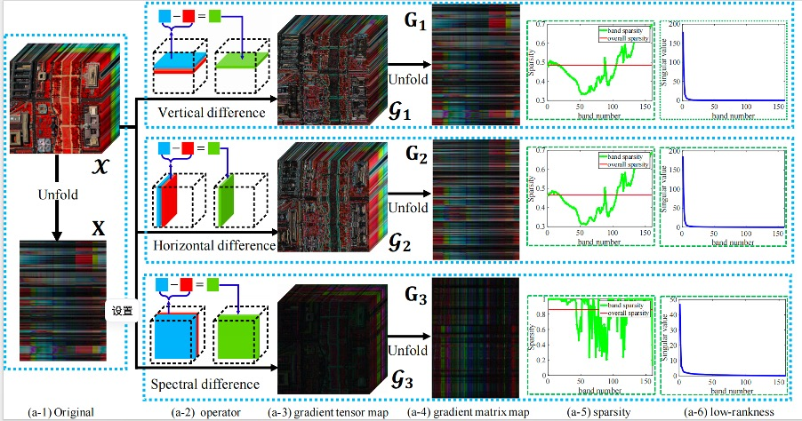
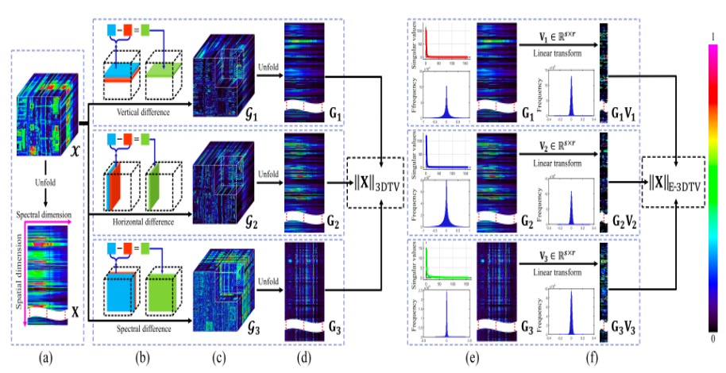
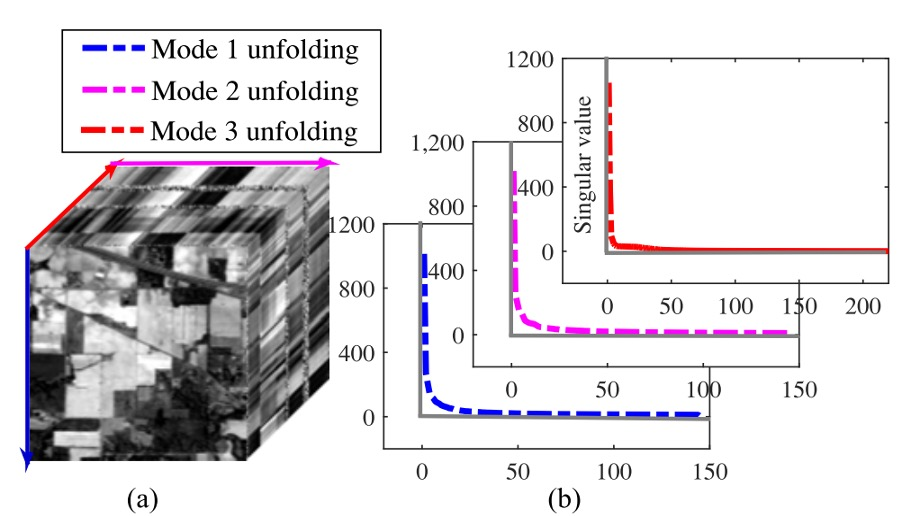
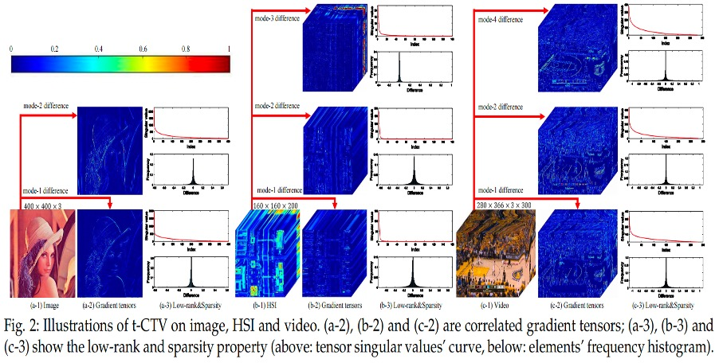

Jiangjun Peng (彭 江军)
Associate Professor
School of Mathematics and Statistics, Northwestern Polytechnical University
Address: Chang'an Avenue, Chang'an District, Xi'an, Shaanxi Province, China
Email: andrew.pengjj@gmail.com, pengjj@nwpu.edu.cn
[Google Scholar] [GitHub] [ResearchGate]
Biography
I received a B.Sc. degree from Northwest University, Xi’an, China, in 2015, and M.Sc. and Ph.D. degrees from Xi’an Jiaotong University, Xi’an, China, in 2018 and 2023, respectively. My master supervisor is Prof. Deyu Meng, and doctor supervisors are Prof. Deyu Meng and Hongying Zhang. From February to September 2017, I conducted academic exchanges at the Institute of Future Cities of the Chinese University of Hong Kong and served as an assistant researcher. From 2018 to 2020, I was a researcher at Tencent Company as an researcher. Currently, I am the associate professor at the School of Mathematics and Statistics, Northwestern Polytechnical University.
Research Interest
My work focuses on data structure modeling and prior mining in machine learning. Specifically, I focus on designing more efficient and interpretable image restoration models by combining more tensor/matrix modeling tools with prior characterization tools. A priori modeling tools include: deep learning and total variation regularization. Recently, I have focused on the following topics:
- Tensor Modeling and application
- low-rank matrix/tensor exact recoverable theory
- Hyperspectral image processing
News
- 2024.9.26: Our recent work DSDP has been accepted by TGRS. Welcome to follow.
- 2024.9.11: Our recent work Stacked Tucker Decomposition has been accepted by TGRS. Welcome to follow.
- 2024.9.03: Our recent work Pan-denoising has been accepted by TGRS. Welcome to follow.
Research Experiences
|
|
Tencent Video Search Center, Tencent Technology Co., Ltd. Research Assistant, July. 2018 ~ Sep. 2020 Center Director: Huan Xiong |
|
Institute of Future Cities, The Chinese University of Hong Kong, Hong Kong Research Assistant, Feb. 2017 ~ Sep. 2017 Supervisor: Prof. Leung Yee |
Selected Publications [Full List]
|  |
Exact Decomposition of Joint Low Rankness and Local Smoothness Plus Sparse Matrices Jiangjun Peng, Yao Wang*, Hongying Zhang, Jianjun Wang, Deyu Meng* |
|  |
Enhanced 3DTV regularization and its applications on HSI denoising and compressed sensing Jiangjun Peng, Qi Xie#, Qian Zhao, Yao Wang*, Leung Yee, Deyu Meng* |
|  |
Hyperspectral Image Restoration Via Total Variation Regularized Low-Rank Tensor Decomposition Yao Wang, Jiangjun Peng, Qian Zhao*, Yee Leung, Xi-Le Zhao, Deyu Meng |
|  |
Hyperspectral Image Restoration Via Total Variation Regularized Low-Rank Tensor Decomposition Hailin Wang, Jiangjun Peng#, Wenjin Qin, Jianjun Wang, Deyu Meng |